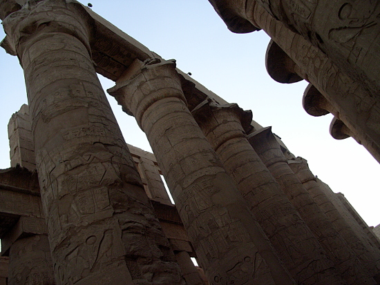

Karnak
19 Nov 2010, Luxor, Egypt
The incredible story of the Ninth Pylon. Pylon inscription block. The Amun-Re precinct has ten pylons; the first five are located coaxially. Pylons seven through ten are along a perpendicular path. Sacred pond in Amun-Re Precinct at Karnak. The Precinct of Mut has a crescent-shaped sacred pond, but that area was closed during my visit. Chance meeting of two other RPCVs from Tanzania on COS travel at Karnak. Temple and Pylon walls tell the Pharaoh's story. Many describe battles, adversaries, and foreign lands. This appears to be a broken obelisk, now resting on it's side. Most of the statues are not labeled. A row of ram statues. See frontal close-up photo below. Columns in the great Hypostyle Hall. See photo of plaque below. Details on Hypostyle Hall Columns.
Question? Contact me at the Juno.com address Dancer2SEAsia.
Special Topics:
back: Medinet Habu Temple
Karnak Temple of Amun-Re Pylon reconstruction.
-------------------------------------------
The Karnak Temple complex began with an expansion of a modest temple to worship Amun, remnant from the Eleventh Dynasty Theban kings. As the power and wealth of the Eighteenth Dynasty increased, so did Thebes and the Karnak Temple complex. From the beginning in the Eleventh Dynasty to the last significant building spans some 1650 years. This complex consists of four major parts; only the Amun-Re Precinct was open during my visit.
The Karnak Temple complex is one of the biggest in the world; only the temple complex in Cambodia at Angkor is larger, albeit much more recent in history.
-------------------------------------------

Life is Good When You Travel! Start planning your next trip!